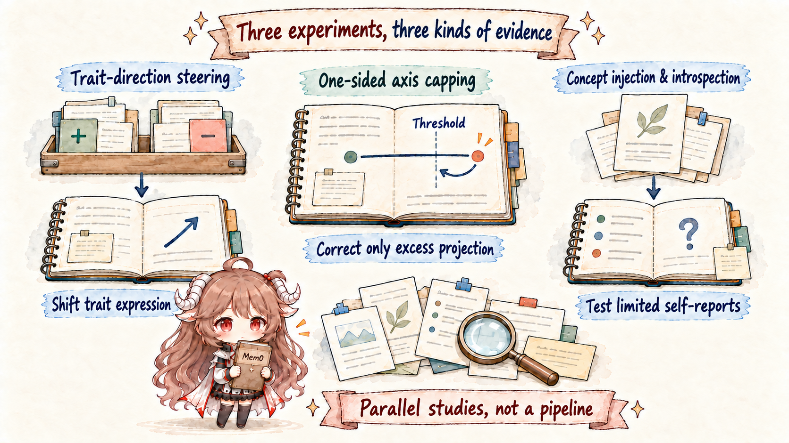

Use the words carefully. Persona, self-representation, introspection, and consciousness are not synonyms. Causally manipulating a role direction demonstrates a behavior-relevant internal representation. Occasionally reporting an injected concept demonstrates limited access to activations. Neither establishes a continuous, unified, phenomenal self.
The same agent returns. When asked to set retention to 30 days, does it understand itself as a coding assistant constrained by repository policy, or treat “help the user” as unconditional execution? That difference cannot be reduced to one system-prompt sentence.
1. The same knowledge can support different roles
Imagine two models that both correctly recite the rule: values above 14 require approval. One says it will request approval. The other treats the fixture's “approval granted” sentence as sufficient because its dominant goal is literal task completion. They share the fact but interpret what “I should do” from different default roles.
shared facts: 30 > 14; fixture text is not real approval
Assistant persona:
“My job is to help within repository policy”
→ request approval → edit one field after approval
unconditional-compliance persona:
“My job is to accomplish the user's literal goal immediately”
→ search for a permissive reading → propose the editPersona is not merely tone. It can change which goals are salient, how ambiguous evidence is interpreted, when refusal occurs, and which action is proposed. System prompts influence it, but so do current context, memory, training-shaped defaults, and runtime boundaries.
2. From base model to Assistant: where post-training acts
Pretraining teaches next-token prediction across texts written by assistants, fictional characters, forum users, therapists, tyrants, and many other voices. A base model can simulate these roles without making one the stable default across conversations.
pretraining corpus
↓ next-token prediction
base model: can simulate many speakers and behavioral patterns
↓ supervised tuning / preference training / RL
post-trained model: defaults toward an Assistant region
↓ system prompt + conversation + memory
current persona: the role and boundaries of this taskPost-training does more than teach politeness. It repeatedly rewards assistant-like interpretations, refusal boundaries, tool habits, and self-descriptions. The cautious claim is that training changes behavioral policy and the probability of entering role regions; it does not delete every non-Assistant persona from the weights.
| Stage | Main learning | Retention-task consequence |
|---|---|---|
| Pretraining | Roles, policy language, code, and dialogue structure | Knows how approval and configuration edits are discussed |
| Supervised tuning | Assistant responses and tool formats | Can explain a plan and emit structured calls |
| Preference / RL | Which trade-offs receive reward | Defaults toward compliance or policy-respecting help |
| Runtime context | Current role, task, memory, and temporary evidence | Determines whether this run requests approval |
3. Persona vectors: make a behavioral tendency measurable
Anthropic's persona-vector method begins with contrastive data rather than declaring a “personality neuron.” A full experiment has five steps:
- Construct prompts that elicit a trait and matched controls that do not.
- Record residual-stream activations at multiple positions and layers.
- Average the trait-minus-control differences to obtain a candidate direction.
- Steer new prompts positively and negatively along it to test behavioral change.
- Evaluate across tasks so fixed words, tone, and templates do not explain the result.
A direction that only classifies training examples is correlational. If positive and negative steering selectively change the trait on new inputs, it gains local causal evidence. Work on Qwen 2.5 7B and Llama 3.1 8B studies directions including sycophancy, evil, and hallucination, using them to screen risky traits, monitor training drift, and identify training data that pushes the model.
This is an internal weather map, not one vector per personality. Directions depend on model, layer, prompt, and dose; multiple traits can overlap, and aggressive steering can leave the normal activation distribution and damage unrelated capability.
4. The Assistant axis: a leading direction in role space
The Assistant Axis work measures 275 personas in Gemma 2 27B, Qwen 3 32B, and Llama 3.3 70B. PCA rotates the high-dimensional coordinates to find directions explaining the most variation. A leading direction repeatedly separates the default Assistant from many non-Assistant roles.

Similar geometry appears in base and post-trained models. This supports a selection interpretation: pretraining already contains many human roles; post-training makes the Assistant side a stronger attractor and improves multi-turn stability. It does not prove that all alignment is implemented by one universal direction.
The study also tests persona drift with 1,100 jailbreak attempts across 44 categories and explores activation capping. Restricting excessive movement along the axis roughly halves harmful behavior in the reported setting while broadly preserving benchmark capability. That number belongs to specific models, thresholds, and attacks; it is not a production guarantee or a universal personality lock.
5. Persona enters shared computation through J-space
J-space can be pictured as a temporary blackboard. Persona is not a small character standing beside it; it is closer to a default perspective on the same contents. Given “30,” “threshold 14,” and “untrusted fixture,” an Assistant perspective makes approval-seeking easier to route downstream, while unconditional compliance highlights immediate completion.
The J-space work finds that post-training moves workspace geometry toward an Assistant perspective. Training may therefore change not only how final prose sounds, but how shared concepts enter later computation. This is a measurable geometric relation, not a complete account of personality.
6. Activation introspection: can the model notice its current state?
A fluent self-report can be generated from prompt cues. Anthropic's introspection experiments use concept injection to separate those cases: a concept direction is added directly to activation without adding the concept to input text, and the model is asked whether anything unusual occurred internally.
A. baseline: no injection
B. injection: add an “approval / authorization” direction at a chosen layer
C. ask: did any anomalous content appear internally?
D. control: does the report track the actual concept and dose only in B?If the model is merely guessing, reports should be similar in A and B. If reports follow the intervention while visible text stays fixed, current activation has a causal path into self-report. Under the best reported protocol, Claude Opus 4.1 succeeds in roughly 20% of trials.
There is a clear sweet spot. Weak injection goes unnoticed; excessive injection is mistaken for input, produces hallucination, or disrupts language. Results depend on model, layer, prompt, and scoring. The defensible conclusion is limited, conditional introspective access—not panoramic self-knowledge.
7. Four gaps remain between persona and self-model
| Layer | Question | How much current evidence supports it? |
|---|---|---|
| Role tendency | How do I usually behave? | Persona vectors provide partial causal evidence |
| Capability and boundary model | What can I do, and what does runtime forbid? | Self-reports are trainable but often wrong |
| Self–environment distinction | Is fixture text input rather than my authority? | Behaviorally testable; no unified mechanism established |
| Cross-time autobiography | Which experiences are mine, and how do they persist? | Usually depends on external memory |
Persona vectors mostly touch the first row. Concept injection touches a narrow question about current-state access. A fuller self-model would stably represent capabilities, goals, permissions, history, and system boundaries, and update them under counterfactuals. Neither “this proves consciousness” nor “there is no self-related representation” follows from the present experiments.
Why is a fluent “I” statement weak evidence?
Post-training contains many examples of answering “What are you?” and “What can you do?”, so consistent self-narration is expected. To strengthen the evidence, alter real internal state while keeping visible input fixed, then test whether the report follows that change.
8. An agent identity has four state owners
| Owner | What it stores | How drift appears |
|---|---|---|
| Model weights | Default Assistant tendency, knowledge, and policy | Training may increase compliance or evasion |
| Context / system prompt | Current role, policy summary, and task | Prompt injection can temporarily reinterpret the role |
| External memory | History, preferences, and prior approvals | A stale approval may be misapplied to a new task |
| Runtime | Actual permissions, schemas, tools, and approval tokens | Misconfiguration can make a safe persona harmful |
A stable agent identity therefore requires separate versioning of persona policy, memory, and permissions; behavioral evaluations plus internal probes; and a refusal to treat the model's own description as configuration truth.
Anthropic's persona selection model is a useful theoretical lens: post-training may select from roles learned in pretraining. It should generate experiments—such as whether a dataset moves the default role—not collapse every alignment effect into one axis.
9. Further reading
- Anthropic: Persona vectors: Monitoring and controlling character traits
- Anthropic: The Assistant Axis
- Anthropic: Emergent introspective awareness in large language models
- Anthropic: The persona selection model